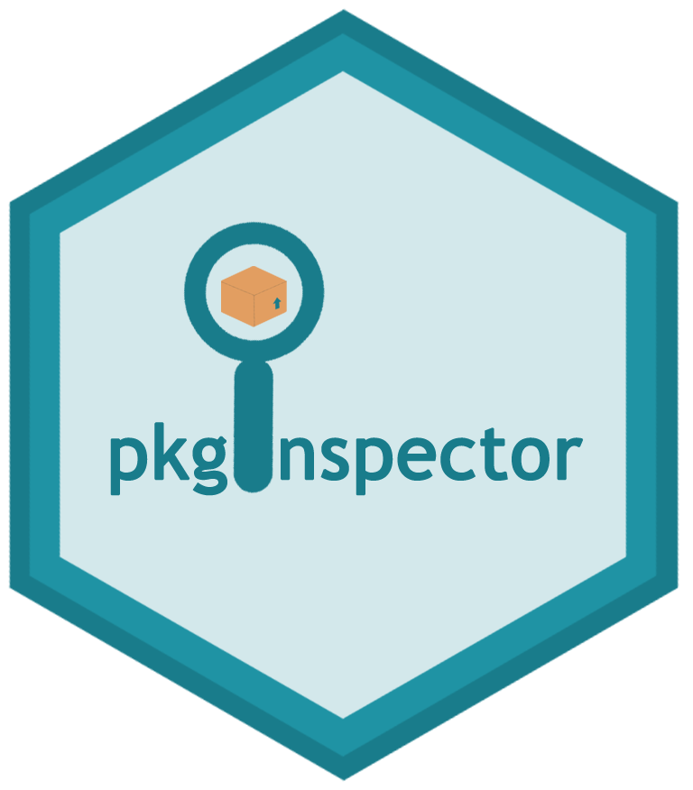
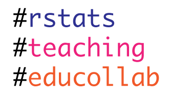
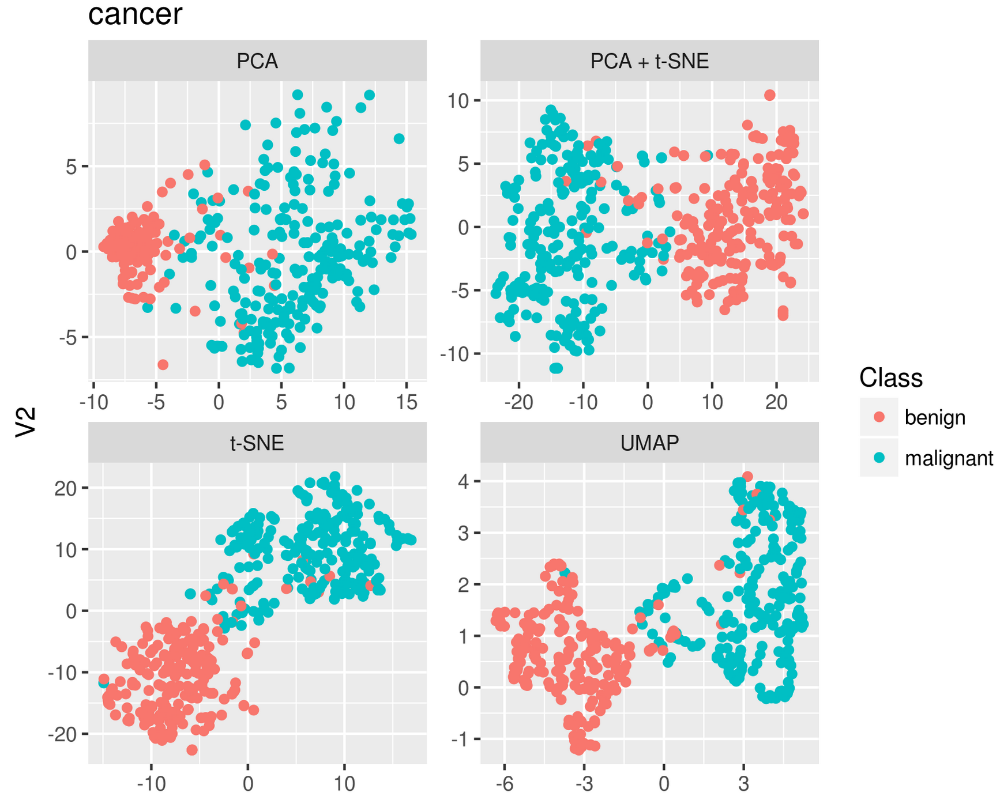
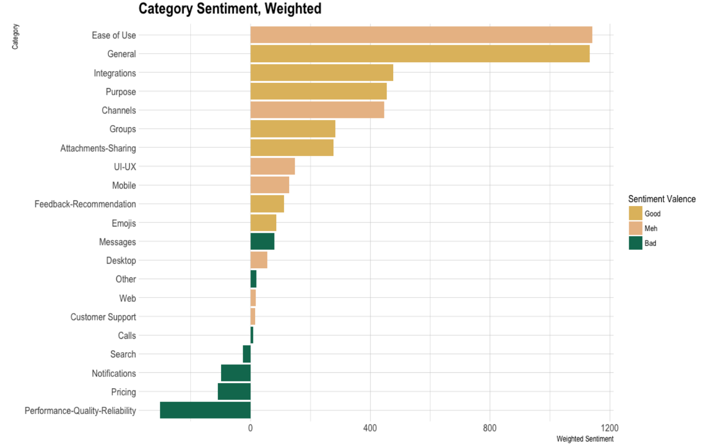

Aug 6, 2018
rOpenSci HQ
The rOpenSci team will be at a number of upcoming events.
- Aug 6-10, New Orleans, LA, USA, Carl Boettiger and Dan Sholler, Ecological Society of America annual meeting
- Aug 15-16, Cambridge, MA, USA, Stefanie Butland, R/Pharma meeting
- Aug 27-30, Dunedin, New Zealand, Scott Chamberlain, Biodiversity Information Standards Meeting (TDWG)
Software 📦
CRAN:  GitHub:
GitHub: 
New packages
- The first version (
v1.0.5) ofhelminthRis on CRAN - access the London Natural History Museum Host-Helminth record database. It’s been on GitHub for a while, but this is the first version on CRAN. Check out the vignette to get started.

- The first version (
v1.0.0) ofphylotaRis on CRAN - Automated Phylogenetic Sequence Cluster Identification from GenBank. Check out the docs to get started. The package recently completed our software review process and is now in the rOpenSci family - welcome Dom! - The first version (
v0.1.0) ofnodbiis now on CRAN - it’s likeDBI, bu for NoSQL databases, supporting create/get/delete/update operations for many NoSQL databases. Check out the README to get started. The project was started a few years back at an rOpenSci Unconference, but is just now getting to CRAN.
New versions
- A new version (
v0.4.0) ofnomisris on CRAN - access UK official statistics from the Nomis database. See the NEWS for changes. Checkout the nomisr docs to get started.
docs fixes, new citation to JOSS paper
- A new version (
v0.4.1) ofepubris on CRAN - read EPUB File Metadata and Text. See the NEWS for changes. Checkout the epubr docs to get started.
many fixes, better error handling
- A new version (
v3.2-0) ofclifrois on CRAN - easily download and visualise climate data from CliFlo. See the release notes for changes. Checkout the clifro vignettes to get started.
many bug fixes, XML -> xml2
- A new version (
v0.9.4) oftaxizeis on CRAN - taxonomic toolbelt for R. See the release notes for changes. Checkout the taxize book to get started.
new fxns to help with API keys; 11 bug fixes!
- A new version (
v0.2.2) ofaukis on CRAN - eBird data extraction and processing with AWK. See the NEWS for changes. Checkout the auk docs to get started.
updated to work with EDB ver. 1.9, bug fixes
- A new version (
v0.2.4) ofwdmanis on CRAN - Webdriver/Selenium binary manager. See the NEWS for changes. Checkout the wdman vignette to get started.
back on CRAN!
- A new version (
v4.8.0) ofplotlyis on CRAN. See the NEWS for changes. Checkout the plotly book to get started.
too many to list …
- A new version (
v0.8.2) ofrplosis on CRAN - Public Library of Science client. See the release notes for changes. Checkout the rplos vignettes to get started.
bug fixes; now test caching with vcr
- A new version (
v0.5.0) ofrredlistis on CRAN - IUCN Red List client. See the release notes for changes. Checkout the rredlist README to get started.
new function to help setup API key; new fxns for comp groups
- A new version (
v0.2-6) ofdbhydroRis on CRAN - DBHYDRO hydrologic and water quality data. See the release notes for changes. Checkout the dbhydroR docs to get started.
get_hydro() bug fix
- A new version (
v0.2.2) ofbomrangis on CRAN - Australian Government Bureau of Meteorology (BOM) data. See the release notes for changes. Checkout the bomrang docs to get started.
fix corrupted zip file download in get_historical(); update pkg citation
- A new version (
v5.3.0) ofdrakeis on CRAN - a pipeline toolkit for reproducible computation at scale. See the release notes for changes. Checkout the drake docs to get started.
lots of improvements, check out the release notes
- A new version (
v0.6.2) ofrobotstxtis on CRAN - robots.txt parser and Webbot/Spider/Crawler permissions checker. See the release notes for changes. Checkout the robotstxt vignette to get started.
pkg dep. future compatability; small fix
- A new version (
v0.1.1) ofbinmanis on CRAN - a binary download manager. See the NEWS for changes. Checkout the binman vignette to get started.
back on CRAN!
- The package qualtRics was archived on CRAN recently - hopefully it will be back up soon.
Software Review ✔
We accept community contributed packages via our onboarding system - an open software review system, sorta like scholarly paper review, but way better. We’ll highlight newly onboarded packages here. A huge thanks to our reviewers, who do a lot of work reviewing (see the blog post on our review system), and the authors of the packages!
If you want to be a reviewer fill out this short form, and we’ll ping you when there’s a submission that fits in your area of expertise.
The following two packages recently went through our onboarding process and have been approved!
- arkdb > Archive and Unarchive Databases Using Flat Files
- Author: Carl Boettiger
- Issue: ropensci/onboarding#224
- Reviewers:
- MODIStsp > A Tool for Automating Download and Preprocessing of MODIS Land Products
Data
- Author: Lorenzo Busetto
- Issue: ropensci/onboarding#184
- Reviewers:
The following three packages were recently submitted:
- spatsoc > Group Animal Relocation Data by Spatial and Temporal Relationship
- Author: Alec Robitaille
- Issue: ropensci/onboarding#237
- Reviewers:
- rdhs > API Client and Dataset Management for the Demographic and Health Survey (DHS) Data
- Author: OJ Watson
- Issue: ropensci/onboarding#238
- Reviewers: not assigned yet
- treestartr > Generate Starting Trees For Combined Molecular, Morphological and Stratigraphic Data
- Author: April Wright
- Issue: ropensci/onboarding#239
- Reviewers:
- David Bapst
- 2nd reviewer not assigned yet
On the blog
rOpenSci Unconference
We’ve got a number of blog posts from our series of posts from teams at our recent rOpenSci Unconference:
The pkginspector team (Sam Albers, Leonardo Collado-Torres, Mauro Lepore, Joyce Robbins, Omayma Said, and Noam Ross) wrote about their pkginspector project: What’s inside? pkginspector provides helpful tools for inspecting package contents

In a series of three blog posts the rOpenSci Educators Collaborative team (Laura Ación, Mara Averick, Leonardo Collado Torres, Auriel Fournier, Alison Hill, Sean Kross, Lincoln Mullen) wrote about:
- What Are The Challenges When Teaching Science With R?
- What Educational Resources Work Well and Why?
- How Can We Develop a Community of Innovative R Educators?

The umapr team (Sean Hughes, Angela Li, Ju Kim, Malisa Smith, and Ted Laderas) wrote about their pkginspector project: A package for dimensionality reduction of large data

Technotes
Jeroen Ooms wrote about a new package: Gifski on CRAN: the fastest GIF encoder in the universe. This is not only a fun package, but also demonstrates usage of the programming language Rust inside an R package!
Use cases
The following seven works use/cite rOpenSci software:
- Rodriguez & cited pdftools in their conference paper Uncovering the digital “x” phenomena in the IS field: A text analysis approach 1
- Longbottom et al. used our package spocc in their paper Vulnerability to snakebite envenoming: a global mapping of hotspots 2
- Araujo & Alves used our package rAltmetric in their preprint The altmetric performance of publications authored by Brazilian researchers: analysis of CNPq productivity scholarship holders 3
- Ruiz et al. used iheatmapr in their paper Characterization of the accessible genome in the human malaria parasite Plasmodium falciparum 4
- Paseka & Grunberg used rotl in their paper Allometric and trait-based patterns in parasite stoichiometry 5
- Finak et al. wrote a paper about their package DataPackageR: DataPackageR: Reproducible data preprocessing, standardization and sharing using R/Bioconductor for collaborative data analysis 6
- Rojas-Garcia et al. used crminer in their paper Semi-automatic extraction of processes affecting beaches from a specialized corpus 7
The following seven papers cited our plotly package:
- Brechtmann, F., Matuseviciute, A., Mertes, C., Yepez, V. A., Avsec, Z., Herzog, M., … Gagneur, J. (2018). OUTRIDER: A statistical method for detecting aberrantly expressed genes in RNA sequencing data. https://doi.org/10.1101/322149 8
- Václav Brázda, Jiri Lysek, Martin Bartas, and Miroslav Fojta. 2018. Complex analyses of short inverted repeats in all sequenced chloroplast DNAs. BioMed Research International. https://www.hindawi.com/journals/bmri/aip/1097018/ 9
- Fontaine, A., Lequime, S., Moltini-Conclois, I., Jiolle, D., Leparc-Goffart, I., Reiner, R. C., & Lambrechts, L. (2018). Epidemiological significance of dengue virus genetic variation in mosquito infection dynamics. PLOS Pathogens, 14(7), e1007187. https://doi.org/10.1371/journal.ppat.1007187 10
- Lawrence, T. N., & Bhalla, R. S. (2018). Spatially explicit action research for coastal fisheries management. PLOS ONE, 13(7), e0199841. https://doi.org/10.1371/journal.pone.0199841 11
- Glanz, H., & Pileggi, S. 2018. Improving statistical communication in statistical computing courses. In M. A. Sorto, A. White, & L. Guyot (Eds.), Looking back, looking forward. Proceedings of the Tenth International Conference on Teaching Statistics (ICOTS10, July, 2018), Kyoto, Japan. Voorburg, The Netherlands: International Statistical Institute. https://iase-web.org/icots/10/proceedings/pdfs/ICOTS10_3F1.pdf 12
- Zhang, Y., Oates, L. G., Serate, J., Xie, D., Pohlmann, E., Bukhman, Y. V., … Ong, R. G. (2018). Diverse lignocellulosic feedstocks can achieve high field-scale ethanol yields while providing flexibility for the biorefinery and landscape-level environmental benefits. GCB Bioenergy. https://doi.org/10.1111/gcbb.12533 13
- Wang, C., Moya, L., Clements, J. A., Nelson, C. C., & Batra, J. (2018). Mining human cancer datasets for kallikrein expression in cancer: the “KLK-CANMAP” Shiny web tool. Biological Chemistry, 0(0). https://doi.org/10.1515/hsz-2017-0322 14
In the news
Alex Koiter used two of our packages, weathercan and tidyhydat, to explore historical precipitation and sediment load in a single creek in 1975.
Thought there was an error in the data until I combined @steffilazerte's weathercan and @big_bad_sam's tidyhydat #rstats packages. Must have been an interesting day in Riding Mtn @ParksCanada Wilsons Crk back on Sept 19, 1975! Over 20 cm of rain in one day! pic.twitter.com/w3qh5DCv6E
— Alex K (@Alex_Koiter) July 10, 2018
Serdar Balci demonstrated in a tweet how to add NCBI references into an R markdown document with our package RefManageR
How to add @ncbi_pubmed references into R #Markdown document? Here is my #rstats code: pic.twitter.com/wCt0rZcZ5T
— Serdar Balcı (@serdarbalci) July 10, 2018
Paul Oldham used our package rorcid in a “practical introduction to the rorcid package”: Introduction to ORCID Researcher Identifiers in R with rorcid. This is a great intro to rorcid - if you’ve been wanting to use it this is a great place to get started.
Mara Averick pointed out a blog post on Image Manipulation for Machine Learning in R, which used our package magick.
✨ Lessons in {magick}…
— Mara Averick (@dataandme) July 17, 2018
📝 “Image Manipulation for Machine Learning in R” by AMR https://t.co/T5KQPyx9Ec #rstats #machinelearning pic.twitter.com/pKE9Utop92
Xavier Rotllan-Puig used our package rgbif in his first R package: PreSPickR
#MyFirstRPackage is on @github. Use #PreSPickR to download species presences (occurrences) from @GBIF and from #Bioatles.https://t.co/16Wku4EOuO
— Xavi Rotllan-Puig 🎗 (@xavi_rp) July 17, 2018
Please, report bugs and suggest improvements! #Rstats
Amanda Dobbyn wrote a blog post recently Sentiment analysis of Slack reviews using R using our packages monkeylearn and robotstxt

Keep up with rOpenSci
- Mailing list: Sign up with an email address to get this newsletter sent to your inbox -> ropensci.org/#subscribe
- Alternatively, you can subscribe to this newsletter via our XML feed at https://news.ropensci.org/feed.xml or our JSON feed at https://news.ropensci.org/feed.json
- rOpenSci on Twitter: @ropensci
- The rOpenSci blog at ropensci.org/blog - you can subscribe in any RSS aggregator, or manually via https://ropensci.org/feed.xml. We also announce new blog posts on our Twitter account.
Footnotes
-
Rodriguez, J., & Piccoli, G. 2018. Uncovering the digital “x” phenomena in the IS field: A text analysis approach. 31st Bled eConference Digital Transformation. https://dds.cct.lsu.edu/ddslab/pdf/rodriguez2018.pdf ↩
-
Longbottom, J., Shearer, F. M., Devine, M., Alcoba, G., Chappuis, F., Weiss, D. J., … Pigott, D. M. (2018). Vulnerability to snakebite envenoming: a global mapping of hotspots. The Lancet. doi:10.1016/s0140-6736(18)31224-8 https://doi.org/10.1016/S0140-6736(18)31224-8 ↩
-
Araujo, R. F., & Alves, M. (2018). The altmetric performance of publications authored by Brazilian researchers: analysis of CNPq productivity scholarship holders. arXiv preprint arXiv:1807.06366. https://arxiv.org/abs/1807.06366 ↩
-
Ruiz, J. L., Tena, J. J., Bancells, C., Cortés, A., Gómez-Skarmeta, J. L., & Gómez-Díaz, E. (2018). Characterization of the accessible genome in the human malaria parasite Plasmodium falciparum. Nucleic Acids Research. https://doi.org/10.1093/nar/gky643 ↩
-
Paseka, R. E., & Grunberg, R. L. (2018). Allometric and trait-based patterns in parasite stoichiometry. Oikos. https://doi.org/10.1111/oik.05339 ↩
-
Finak, G., Mayer, B., Fulp, W., Obrecht, P., Sato, A., Chung, E., … Gottardo, R. (2018). DataPackageR: Reproducible data preprocessing, standardization and sharing using R/Bioconductor for collaborative data analysis. Gates Open Research, 2, 31. https://doi.org/10.12688/gatesopenres.12832.2 ↩
-
Rojas-Garcia, J., Batista-Navarro, R., & Faber, P. 2018. Semi-automatic extraction of processes affecting beaches from a specialized corpus. In The XVIII EURALEX International Congress (p. 93). http://euralex2018.cjvt.si/wp-content/uploads/sites/6/2018/07/Euralex2018_book_of_abstracts_FINAL.pdf#page=93 ↩
-
Brechtmann, F., Matuseviciute, A., Mertes, C., Yepez, V. A., Avsec, Z., Herzog, M., … Gagneur, J. (2018). OUTRIDER: A statistical method for detecting aberrantly expressed genes in RNA sequencing data. https://doi.org/10.1101/322149 ↩
-
Václav Brázda, Jiri Lysek, Martin Bartas, and Miroslav Fojta. 2018. Complex analyses of short inverted repeats in all sequenced chloroplast DNAs. BioMed Research International. https://www.hindawi.com/journals/bmri/aip/1097018/ ↩
-
Fontaine, A., Lequime, S., Moltini-Conclois, I., Jiolle, D., Leparc-Goffart, I., Reiner, R. C., & Lambrechts, L. (2018). Epidemiological significance of dengue virus genetic variation in mosquito infection dynamics. PLOS Pathogens, 14(7), e1007187. https://doi.org/10.1371/journal.ppat.1007187 ↩
-
Lawrence, T. N., & Bhalla, R. S. (2018). Spatially explicit action research for coastal fisheries management. PLOS ONE, 13(7), e0199841. https://doi.org/10.1371/journal.pone.0199841 ↩
-
Glanz, H., & Pileggi, S. 2018. Improving statistical communication in statistical computing courses. In M. A. Sorto, A. White, & L. Guyot (Eds.), Looking back, looking forward. Proceedings of the Tenth International Conference on Teaching Statistics (ICOTS10, July, 2018), Kyoto, Japan. Voorburg, The Netherlands: International Statistical Institute. https://iase-web.org/icots/10/proceedings/pdfs/ICOTS10_3F1.pdf ↩
-
Zhang, Y., Oates, L. G., Serate, J., Xie, D., Pohlmann, E., Bukhman, Y. V., … Ong, R. G. (2018). Diverse lignocellulosic feedstocks can achieve high field-scale ethanol yields while providing flexibility for the biorefinery and landscape-level environmental benefits. GCB Bioenergy. https://doi.org/10.1111/gcbb.12533 ↩
-
Wang, C., Moya, L., Clements, J. A., Nelson, C. C., & Batra, J. (2018). Mining human cancer datasets for kallikrein expression in cancer: the “KLK-CANMAP” Shiny web tool. Biological Chemistry, 0(0). https://doi.org/10.1515/hsz-2017-0322 ↩